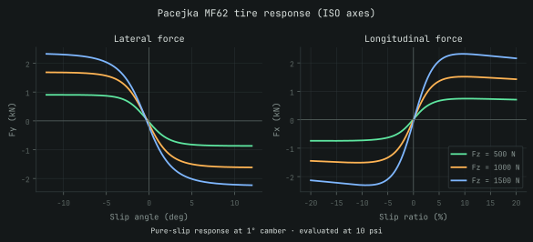
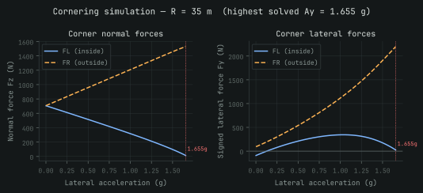
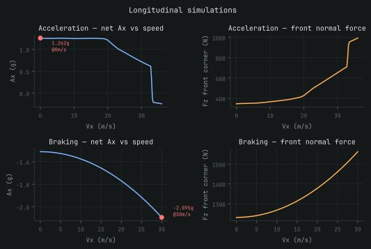
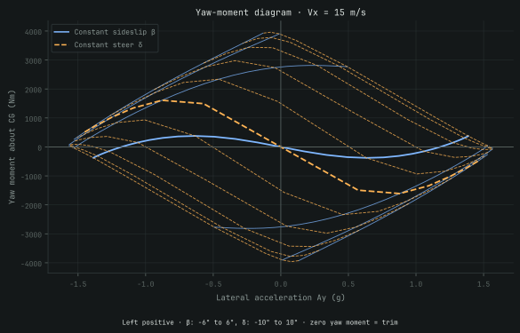
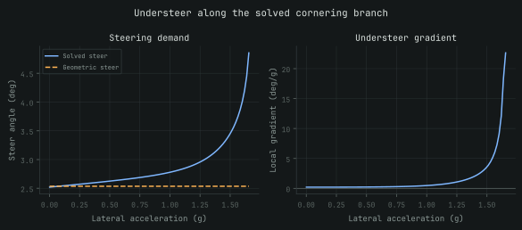
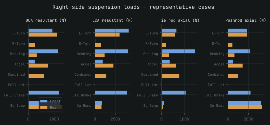
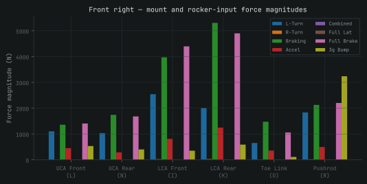

Suspension Load Analysis Pipeline
An end-to-end Python pipeline that turns vehicle and tire parameters into suspension design loads and ANSYS-ready inputs.
Project Summary
- Vehicle and suspension loads for UBC Formula Electric.
- Four-corner load sweeps, eight design cases and direct ANSYS exports.
- Built the tire, vehicle and suspension calculations into one Python workflow.
- Combined-slip tire modelling, a seven-equation upright solver and pushrod moment balance.
- Regenerates the design loads, figures and ANSYS inputs from one vehicle setup.
- Verified with 24 automated checks covering the mechanics and exported results.
Problem
Changing the vehicle setup changes the forces carried by the suspension and chassis. Mass distribution, tire grip, aero and geometry all matter. In the past, updating the design loads meant working through separate calculations and transferring the results into FEA.
I built a Python pipeline that calculates those loads and exports them directly to ANSYS. It models the tires, solves the forces on the car, then calculates the loads in the suspension members and chassis mounts. Every maximum force is linked to the driving condition that produced it.
Pipeline Overview
All calculations use the same vehicle setup. A change to mass, geometry, aero or suspension settings carries through the tire model, vehicle simulations and structural loads. The four stages are:
Tire Model
I use the Pacejka MF6.2 model to predict forces and moments for the Hoosier R20 tire. Its inputs include vertical load, pressure, camber and slip: the difference between how the wheel is moving and how it would roll without sliding.
Combined slip lets the model handle braking or acceleration during a turn. Both demands use the tire's available grip, so they cannot each be assigned their separate maximum force.
I fitted the tire's overturning and self-aligning moments using TTC test data, then checked the results on separate test runs. The model also accounts for load sensitivity and camber, giving different responses for the loaded outside tire and the lighter inside tire.

Design Load Cases
Cornering
I increase lateral acceleration in steps and solve for a balanced turn at each step. The solver adjusts steering, vehicle sideslip, tire slip and load transfer until the forces and moments balance. I solve this nonlinear system with SciPy.
All four wheels are modelled separately. As load moves from the inside tires to the outside tires, their grip and camber change. The calculation also includes aero and the tires' own moments.
The sweep stops if a wheel lifts, an input reaches the tire model's limits, or the solver cannot find a balanced state. I report the highest solved point, along with the step size and reason the sweep stopped.

Acceleration and braking
Acceleration is limited by tire grip, the motor torque map and the car's 80 kW power limit. I calculate motor speed from the slipping wheel speed, so the torque limit follows the actual tire operating point.
The braking model includes grip, drag, downforce and front-to-rear load transfer. A separate brake-system model converts pedal force into hydraulic pressure and wheel torque, then finds which axle reaches its grip limit first.

Eight structural load cases
- Driving conditions: left turn, right turn, braking, acceleration, and combined 1g acceleration with a 1g turn.
- Additional design demands: full lateral load transfer, full braking load transfer, and a 3g bump.
The combined case uses the tire's combined-slip response at a 20 m turn radius. The additional design demands impose extreme loads for structural sizing. I also search the complete simulation sweeps for maximum member forces, since the highest vehicle acceleration may not produce the highest force in every part.
Handling Analysis
I use yaw-moment diagrams and understeer gradients to examine how steering and vehicle sideslip affect the car's turning response. Both calculations use the same tire forces, load transfer and aero model as the structural load cases.


The workflow also calculates steering loads, ride and roll behaviour, brake and pedal geometry, and a 75 m acceleration event. I can assess how a setup change affects handling, performance and structural loading without switching models.
Upright Statics
The upright connects the wheel to the control arms and toe link. I treat it as a rigid body and calculate the forces at those joints from the forces and moments applied at the wheel centre.
The upper and lower joints each have three unknown force components. The toe link adds one unknown axial force. I solve these seven unknowns using force balance, moment balance and the lower arm's geometry.
Pushrod load and control-arm bending
The pushrod attaches away from the upper upright joint. That offset creates bending in the control arm and changes the pushrod force needed to support the wheel load.
I modelled the upper arm as a rigid body and balanced moments about the axis through its two chassis bearings. This uses the upright force, the actual attachment positions and the pushrod direction to solve the pushrod load.
View the upright and pushrod equations
Seven-equation upright solver
Three force equations and three moment equations provide six constraints. The seventh keeps the lower-arm reaction in the plane of its two links. I assemble these into a 7 × 7 matrix from the suspension coordinates and solve it with NumPy. Here nLCA is the normal to the lower-arm plane.
Moment balance about the upper-arm pivot
L and N are the chassis bearings, M is the upright joint, and Q is the pushrod attachment on the arm. The unit vector a follows the pivot axis LN; n follows the pushrod toward the rocker.
FU is the upper-arm force on the upright. The force on the arm is therefore −FU. With pushrod tension T:
The cross products calculate the moments of the upright and pushrod forces. Projecting their sum onto a isolates the moment about the pivot axis. Solving this equation gives T; the exported force uses the opposite sign so compression is positive.
I then calculate the forces carried by the two chassis bearings. Their split along the pivot axis cannot be found from equilibrium alone, so I state the load-sharing assumption and calculate its effect on the mount loads.
As a final check, the support reactions must reproduce all the forces and moments applied at the wheel centre.

ANSYS FEA Export
I export the wheel-centre forces and moments, suspension-joint forces, chassis-mount forces, and the maximum tension and compression in each member. Each maximum is linked to its load case, speed or lateral acceleration.
All exports use the same coordinate system: X forward, Y left and Z up. Joint forces, chassis-mount loads and the pushrod force at the rocker are identified separately, so each load can be applied to the correct part of the FEA model.

Results & Verification
One command runs the simulations and regenerates the ANSYS files, plots and verification reports. For each member, I can see the maximum load and whether braking, cornering, acceleration or bump controls its design.
I verified the calculations with 24 automated checks. These cover known lever-arm solutions, full force and moment balance, coordinate transformations, tire contact, motor limits, brake hydraulics and the acceleration simulation. I also check the values written to the exported files.
The result is a repeatable design tool: I can evaluate a vehicle change, identify the members and mounts it affects, and take the resulting loads directly into structural analysis.